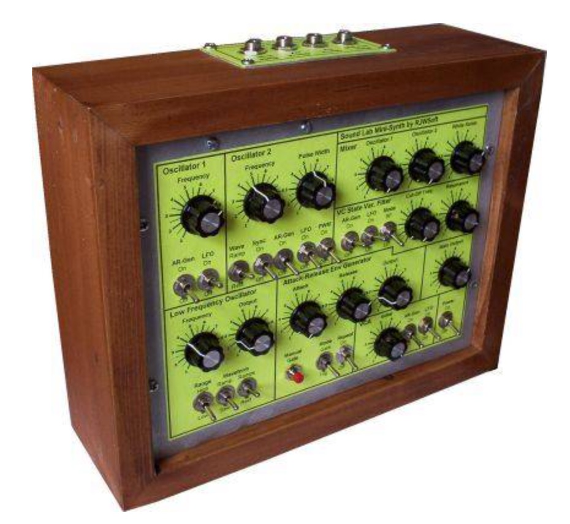

Full analog legendary design by Ray Wilson.

This project is fun for someone with intermediate to advanced electronics skills who wants to make cool sounds. It makes a great first synth project but is interesting enough for the seasoned synth-diyer too. The board includes 1V/oct scale adjustment trimmers for the oscillators You will get a couple (maybe three) octaves of in tune scale.
All DB data
- Name: Sound Lab Mini-Synth
- Author: Ray Wilson
- Link: http://musicfromouterspace.com/index.php?MAINTAB=SYNTHDIY&VPW=1910&VPH=871
- Demo: https://www.youtube.com/watch?v=fOlqHWykypg
- Picture: ../pics/sound-lab-mini-synth.jpg
- Description: Full analog legendary design by Ray Wilson.
- Notes: This project is fun for someone with intermediate to advanced electronics skills who wants to make cool sounds. It makes a great first synth project but is interesting enough for the seasoned synth-diyer too. The board includes 1V/oct scale adjustment trimmers for the oscillators You will get a couple (maybe three) octaves of in tune scale.
- Artifacts: {“Schematic”=>true}{“PCB”=>false}{“BOM”=>true}{“FW”=>false}{“Docs”=>true}{“Enclosure”=>false}
- Tags: AnalogMonophonic
- Level: Advanced
{kind=link}